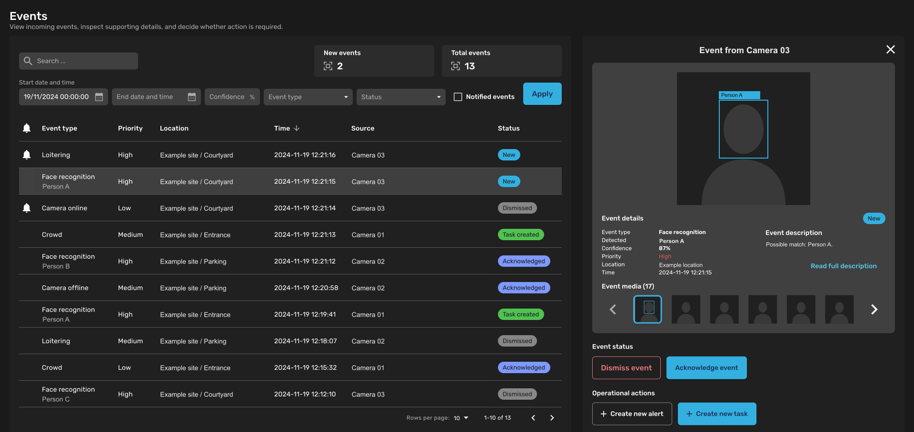

Selected work
Operational products, UX research and design through implementation.

Locust Swarm
First designer on a UAV command-and-control product. Owned design from discovery through productization and established the team’s design practices.
Product design · Design systems · Field work
NSC3
Define requirements and operator workflows for a critical-communications platform, and adapt its design system for AI-assisted development.
Requirements · Interaction design · AI-assisted design and development
Usability scoring toolset
Created a UX evaluation method. Trained IT staff to apply it, and it's now in active use at Patria.
Mixed methods UX research · Evaluation methods · Staff training
Screenful
Designed and built inline report editing in Vue, keeping changes in the report’s context.
Interaction design · Frontend development